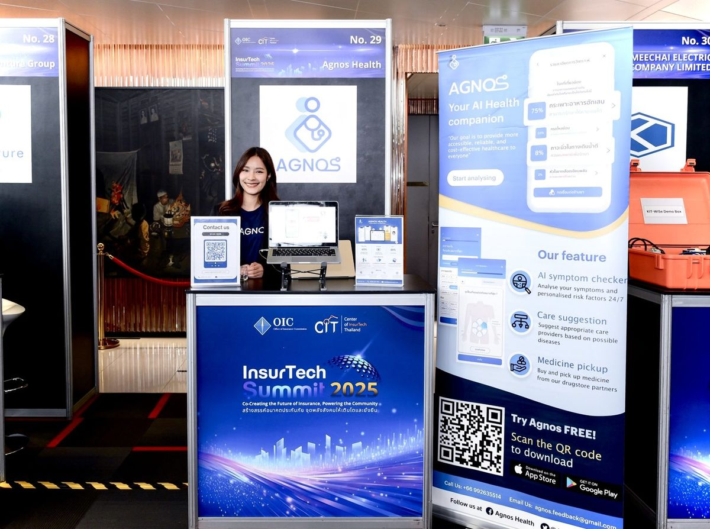
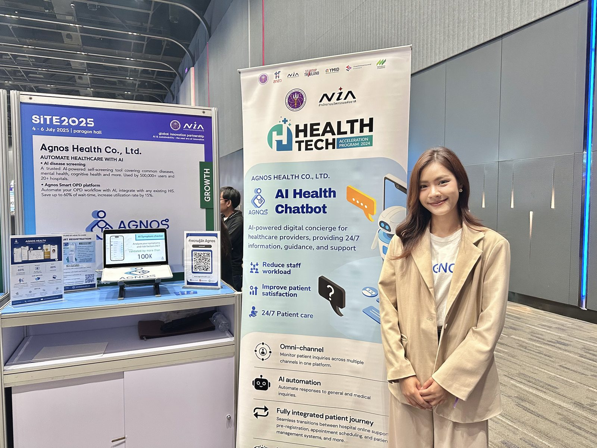
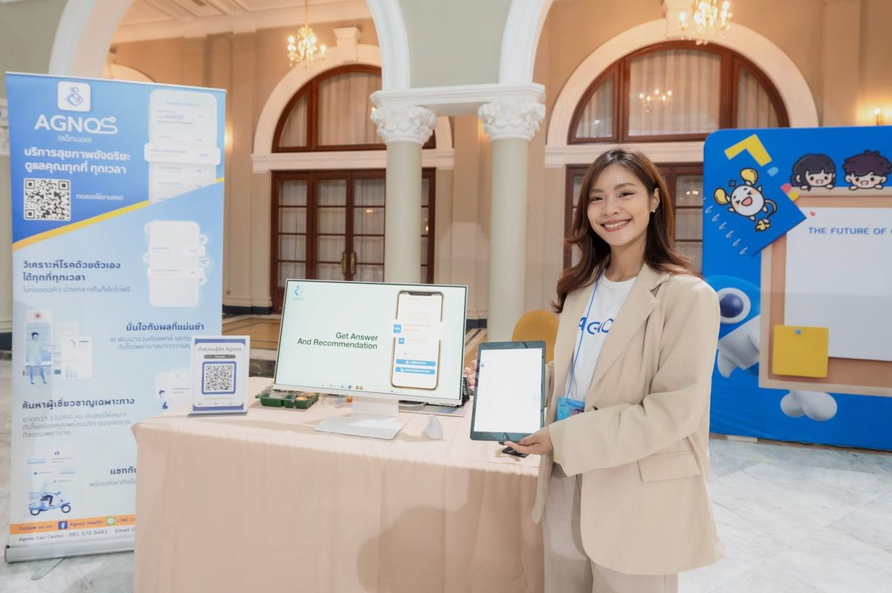
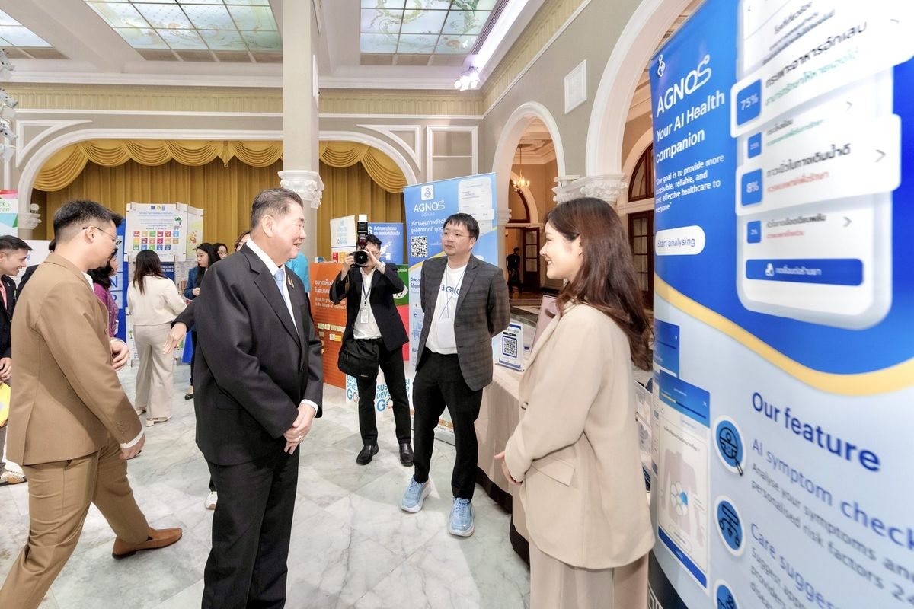
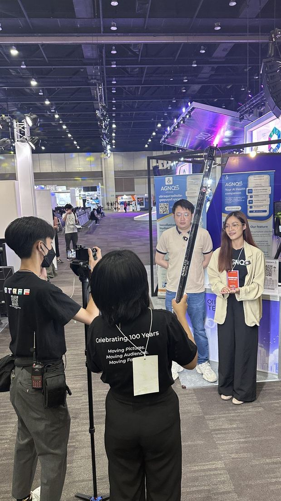
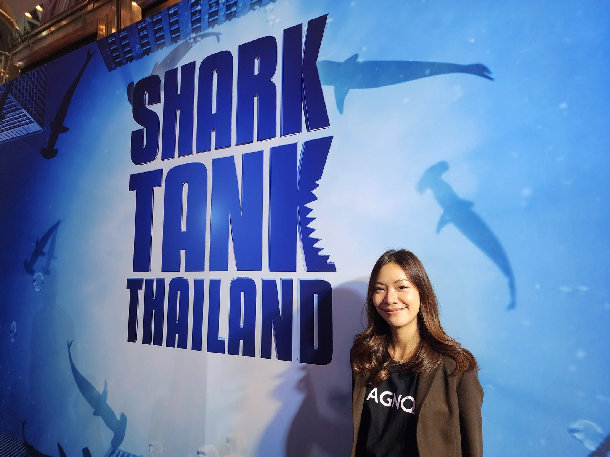
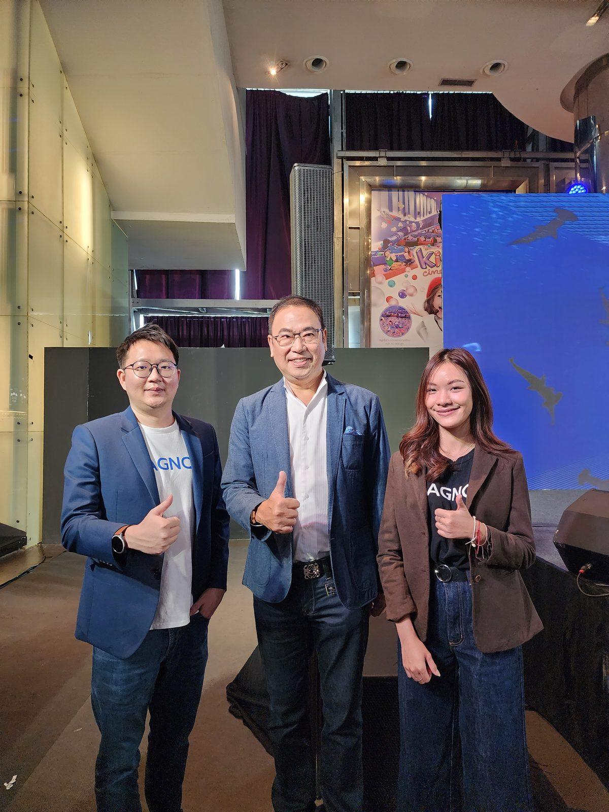

ผลงานอื่นๆ
จากการออกบูธเฉยๆ
สู่ระบบลีดที่ส่งต่อทีมขายได้จริง
Agnos Health · Event Marketing · Booth Operations · Lead Generation

บูธ Agnos Health · InsurTech Summit 2025 (OIC × CIT)
RoleEvent Marketing · Booth Operations · On-site Production
ช่องทางงานเวทีอุตสาหกรรม · บูธในงานประชุม · สื่อหน้างาน
ช่วงเวลา2022 – 2026 (ต่อเนื่อง 4 ปี)
บทบาทและความเป็นเจ้าของงาน
- ออกบูธและบริหารจัดการหน้างานในอีเวนต์อุตสาหกรรมเกือบทุกแห่งที่บริษัทเข้าร่วม
- เก็บและคัดกรองลีดหน้างาน พร้อมส่งต่อให้ทีมธุรกิจนำไปใช้ต่อ
- ควบคุมการผลิตสื่อสนับสนุนทั้งหมด (ภาพถ่าย วิดีโอ โพสต์โซเชียล) สำหรับทุกอีเวนต์ให้สอดคล้องกับทิศทางแบรนด์
- ประสานงานทีมและอุปกรณ์หน้างานให้พร้อมทุกครั้งที่บริษัทเข้าร่วมงาน
โจทย์
Agnos ในฐานะสตาร์ทอัพต้องออกงานอีเวนต์และงานประชุมอุตสาหกรรมอยู่เสมอเพื่อสร้างความสัมพันธ์กับโรงพยาบาลและพาร์ทเนอร์
แต่การไปออกบูธเฉยๆ ไม่ได้สร้างมูลค่าทางธุรกิจโดยอัตโนมัติ หากไม่มีระบบที่แปลงคนที่เดินผ่านหน้าบูธให้กลายเป็นลีดที่มีคุณภาพ
โจทย์คือ "ทำให้ทุกอีเวนต์ที่บริษัทเข้าร่วมสร้างมูลค่าทางธุรกิจได้จริง" ไม่ใช่แค่มีตัวตนอยู่ในงาน
โดยไม่มีทีมอีเวนต์แยกต่างหาก ต้องบริหารทุกอย่างด้วยตัวเองตั้งแต่เตรียมงานจนถึงส่งต่อลีด
แนวทาง
ฉันมองทุกบูธเป็น "ช่องทางขาย ไม่ใช่แค่การไปโชว์ตัว"
เหตุผลเบื้องหลัง: การออกบูธที่ดีต้องมีระบบตั้งแต่ก่อนงาน (เตรียมสื่อและประเด็นพูดคุยให้ตรงกลุ่มเป้าหมาย)
ระหว่างงาน (พูดคุยและคัดกรองผู้สนใจจริง) ไปจนถึงหลังงาน (ส่งต่อลีดให้ทีมขายอย่างเป็นระบบ)
เพื่อให้ทุกการเข้าร่วมงานสร้างผลลัพธ์ที่วัดได้ ไม่ใช่แค่การปรากฏตัว
สิ่งที่สร้างและลงมือทำ
01 Event Marketing & Lead Generation
ออกบูธและบริหารจัดการหน้างานในอีเวนต์อุตสาหกรรมเกือบทุกแห่งที่บริษัทเข้าร่วม พร้อมเก็บและคัดกรองลีดเพื่อส่งต่อให้ทีมธุรกิจ
02 Comprehensive On-Brand Production
ควบคุมการผลิตคอนเทนต์สนับสนุนทุกรูปแบบ ทั้งภาพนิ่ง วิดีโอ และโพสต์โซเชียลที่สะท้อนตัวตนและมาตรฐานของแบรนด์ในทุกอีเวนต์
ภาพจากหน้างาน






SiTE 2025 · NIA HealthTech Acceleration · งานภาครัฐ · InsurTech Summit 2025 · Shark Tank Thailand
ขอบเขตผลงานและตัวเลขจริง
ครอบคลุมงานประชุมอุตสาหกรรมทั้งในและต่างประเทศ พาร์ทเนอร์ระดับภาครัฐ และเครือข่ายโรงพยาบาลชั้นนำที่บริษัทเข้าร่วมออกบูธด้วย
บทสรุปภาพรวม
โปรเจกต์นี้สะท้อนว่า การออกงานอีเวนต์สร้างมูลค่าทางธุรกิจได้จริง เมื่อมีระบบตั้งแต่ก่อนงานจนถึงส่งต่อลีด ไม่ใช่แค่การมีตัวตนอยู่ในงาน
แสดงให้เห็นวิธีทำงานระดับ Marketing Team Lead: การบริหารงานหน้างานทั้งหมดด้วยตัวเอง ตั้งแต่วางแผน ผลิตสื่อ จนถึงส่งมอบลีดให้ทีมขายอย่างเป็นระบบ
สิ่งที่ได้เรียนรู้
- ทุกจุดสัมผัสคือแบรนด์: แม้แต่บทสนทนาสั้นๆ หน้าบูธก็สะท้อนคำมั่นสัญญาของแบรนด์ได้เหมือนกับแคมเปญใหญ่
- ระบบที่ดีเปลี่ยนคนเดินผ่านให้เป็นโอกาสทางธุรกิจ: การคัดกรองและส่งต่อลีดอย่างสม่ำเสมอทำให้ทีมขายได้ pipeline จริง ไม่ใช่แค่รายชื่อ
- การปรากฏตัวต้องพิสูจน์ตัวเองซ้ำทุกครั้ง: แต่ละงานมีผู้ชมและบริบทต่างกัน มาตรฐานของบูธและสื่อต้องคงที่ทุกครั้งไป
Selected Works
From Just Showing Up
to a Lead System Sales Can Use
Agnos Health · Event Marketing · Booth Operations · Lead Generation
Agnos Health booth · InsurTech Summit 2025 (OIC × CIT)
RoleEvent Marketing · Booth Operations · On-site Production
ChannelsIndustry stages · Conference booths · On-site collateral
Period2022 – 2026 (4 continuous years)
Role & Ownership
- Ran booths and on-site operations at nearly every industry event the company joined
- Captured and qualified leads on-site, handing them off to the business team
- Controlled all supporting production (photo, video, social posts) for every event, on-brand
- Coordinated team and on-site logistics so the company was always ready to show up
Challenge
As a startup, Agnos needed to show up at industry events and conferences constantly to build relationships with
hospitals and partners. But simply having a booth doesn't automatically create business value — without a system,
foot traffic never turns into qualified leads.
The task: "make every event the company attends generate real business value," not just presence — with no
dedicated events team, running everything myself from prep to lead handoff.
Approach
I treated every booth as a sales channel, not just a presence.
The reasoning: a good booth needs a system before the event (prepping materials and talking points for the right
audience), during the event (engaging and qualifying genuine interest), and after the event (handing off leads to
sales systematically) — so every event produces a measurable result, not just a sighting.
What I Built & Executed
01 Event Marketing & Lead Generation
Ran booths and on-site operations at nearly every industry event the company joined, capturing and qualifying leads to hand to the business team.
02 Comprehensive On-Brand Production
Controlled all supporting content — stills, video, and social posts — reflecting the brand's identity and standard at every event.
From the Floor
SiTE 2025 · NIA HealthTech Acceleration · public-sector events · InsurTech Summit 2025 · Shark Tank Thailand
Scope & Impact
Spanning domestic and overseas industry conferences, public-sector partners, and leading hospital networks the company exhibited alongside.
Outcome
This reflects that events create real business value only when there's a system from prep to lead handoff, not
just presence. It shows how I operate at Marketing Team Lead level: running all on-site operations myself, from
planning and production to systematically delivering leads to the sales team.
Key Learnings
- Every touchpoint is the brand: even a short booth conversation carries the brand's promise as much as a big campaign does.
- Good systems turn foot traffic into pipeline: consistent lead qualification and handoff gives sales a real pipeline, not just a list of names.
- Presence has to be earned every time: each event has a different audience and context, so booth and content standards have to stay consistent across all of them.